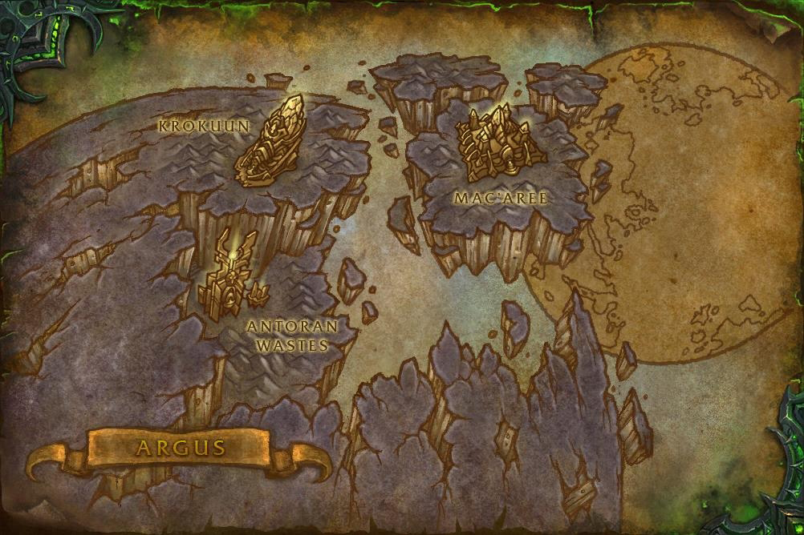
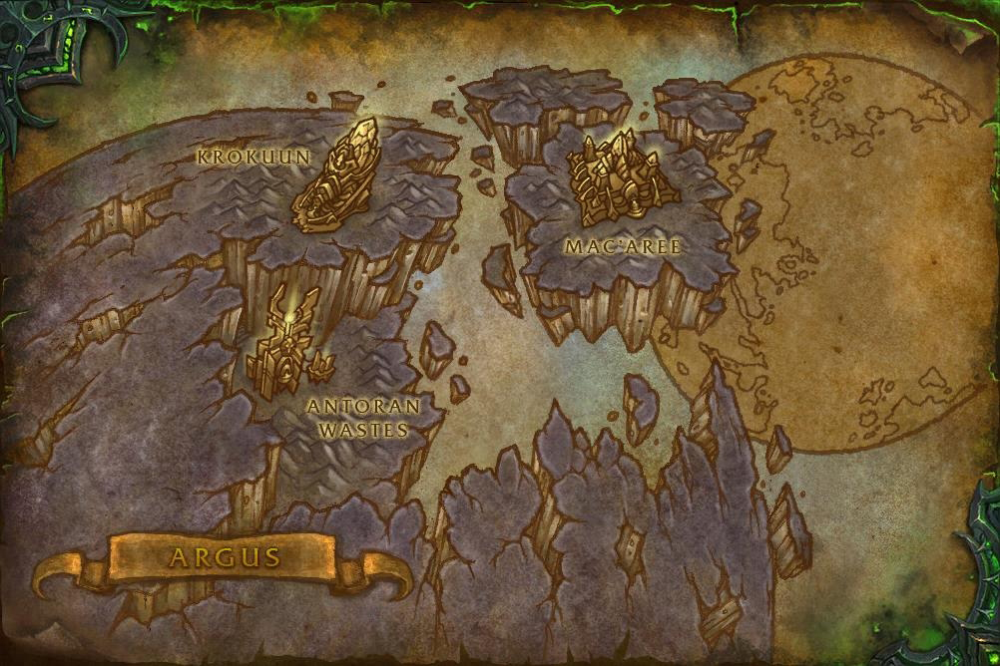

А́ргус — родина эредаров и отделившихся от них дренеев.
Аргусом правил триумвират могущественнейших магов-эредаров. Это были
Кил’джеден, Архимонд и Велен. Достоверно известно, что на планете были
холодные горы Кааринос и множество городов с одарёнными магами, а самым
священным из них была столица Мак’Ари. Согласно легендам, это был город,
устланный драгоценностями и испещрённый реками-каналами, сверкающими даже
ночью. Приблизительно 25 тыс. лет назад к этой могущественной расе
эредаров явился падший титан Саргерас, который предложил им присоединиться
к его Пылающему Легиону и стать повелителями множества миров. Архимонд и
Кил’джеден были готовы сразу согласиться, но Велен сомневался в истинных
намерениях чужака. Затем он получил видение, в котором увидел будущее
эредаров, согласившихся стать частью Легиона — они превратятся в демонов.
Велен попытался предупредить об этом своих братьев, но те были уже
опьянены мечтами о власти, и Велен понял, что с этого момента потерял их.
В отчаянии он попросил помощи у небес, и ему ответили наару. Наару
являются врагами Легиона и сторонниками Света. Они втайне собирают все
расы, противящиеся Саргерасу, чтобы однажды создать единую непобедимую
Армию Света. Велен согласился присягнуть на верность Свету, если Наару
помогут его народу. В назначенный час Велен собрал горстку
единомышленников и едва успел бежать от сил Кил’джедена, который уже
превратился в демона и считал Велена предателем своей расы. Кил’джеден,
Архимонд и все остальные оставшиеся эредары Аргуса стали частью Легиона. В
ходе событий дополнения Legion Велен, Иллидан, Кадгар и герои Азерота
отправились на Аргус с целью окончательного уничтожения Пылающего Легиона.
В Анторусе они расправились с лидерами Легиона, а пантеон титанов,
используя испорченную душу мира Аргуса, поместил Саргераса в заточение,
следить за которым остался Иллидан.